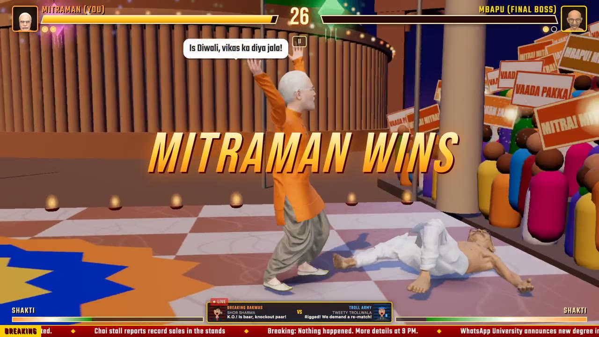
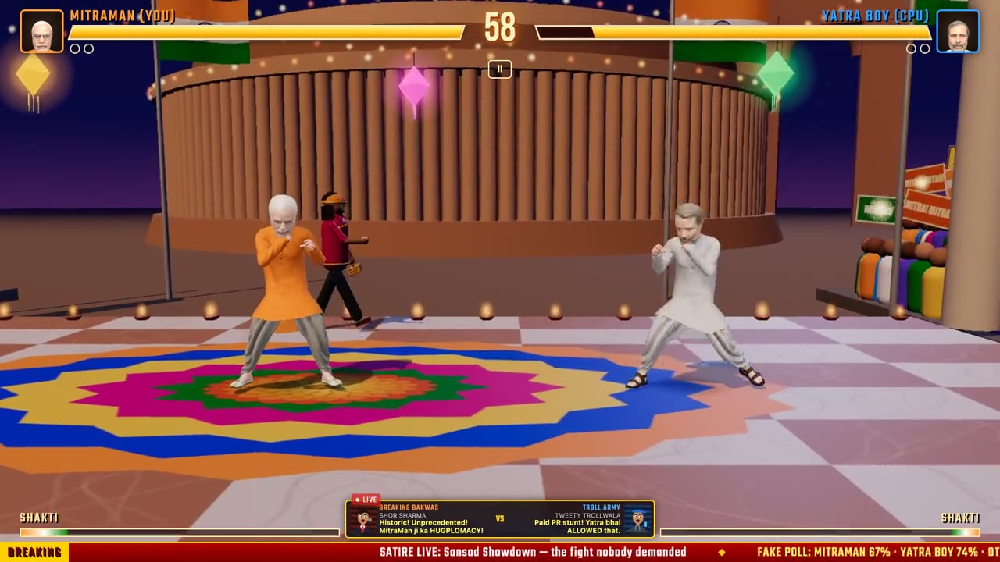

Sansad Showdown RL · methodology
A 169k-parameter net beat the
game's secret Hard final boss.
Keyboard only. Here's exactly how, step by step.
The rules I set
Play like a person would.
IN
130 numbers
A summary of what's on screen: positions, health, meter, what each fighter is doing.
OUT
1 of 17 moves
Turned into real keydown / keyup events, 15 times a second.
NEVER
Writes to the game
No memory edits, no speed changes, no skipping. It reads state and presses keys.
Reads come from the game's own read-only developer hook, which is only exposed on localhost.
The recipe
Five steps from a JS bundle to a boss-beating net.
01
Simulator
The game's real fight code, headless in Node.
40k ticks/s
02
Teacher
A lookahead search player.
4 / 5 wins
03
Student
A small MLP that copies it.
0.2 ms / move
04
DAgger
The teacher corrects the student's mistakes.
62 → 87
05
Keyboard
The net plays the real game.
2–1 live
Step 01 · Simulator
Don't write a simulator. Borrow the game's.
// build.py: cut the bundle before DOM bootstrapping
export { Battle, Fighter, Bot, Match, CHARS, BOSS }
// stubs.mjs: just enough fake browser
document, localStorage, 4×4 canvas
renderer, rigs, audio → no-op Proxy
// determinism
b._rs = seeded RNG // gameplay randomness
Math.random // visual effects only
40,000
ticks per second · ~666× real time
13 µs
to clone the whole fight state
It's the shipping fight logic, so there's no second physics model to drift out of sync.
Step 01 · The action space
17 moves, relative to the opponent.
idle—
fwdhold
blockhold
lowblockhold
crouchhold
jumpW
jumpfwdW+fwd
jumpbackW+back
punchJ
kickK
fwdpunchfwd+J
fwdkickfwd+K
lowpunchS+J
lowkickS+K
grabI
superL
budgetB
- One decision covers 4 ticks, so 15 decisions a second.
- Directions are held for the window. Buttons are tapped on the first tick only, because the game reacts to key-down edges.
Step 02 · The teacher
A search player that tries every move.
- Clone the battle, reseed the clone's RNG so the CPU reacts differently each sample
- Play the move, fast-forward any super or grapple cinematic
- Finish a 48-tick horizon with a cheap scripted tail: guard up, poke when close
- Score the end state, average over 8 futures
81 ms
per decision
4 / 5
wins vs Hard boss (8 samples, 48 ticks)
3 / 5 with 4 samples, 40 ticks
score = oppHP lost − 1.25 × ownHP lost + 60·[opp KO] − 80·[own KO] + 0.04·own meter − 0.03·opp meter
The catch
Strong, but far too slow to play live.
3½–11 min
of compute per boss match
66 ms
between decisions at 15 a second. The search alone needs 81.
So the search player becomes a teacher. Every decision it makes is logged as (observation, value of every move, best move), and a small net learns to copy it.
Step 03 · What the net sees
130 numbers, mirrored so "forward" always means toward the opponent.
distance
position · velocity
HP · meter · stun
crouch · grounded · blocking
combo count · facing
frames in state
14 state one-hots
14 attack one-hots
attack phase: startup / active / recovery
attack progress
round timer · round · rounds won
boss flag
budget power-up · bomb · mithai
hit-stop
previous action
Every per-fighter feature is there for both fighters. The same file, obs.mjs, runs unchanged in Node and in the browser, so training and live play see identical inputs.
Step 03 · The student
A tiny MLP that learns how much worse each move is.
MLP 130 → 256 → 256 → 256 → 17
ReLU · standardised inputs · ~169k params
loss = soft + 0.5 · hard
soft: softmax(values / τ=2), legal moves only
hard: cross-entropy on the teacher's pick
AdamW 1e-3 · cosine · 30 epochs
batch 512 · Apple MPS
Weights export to JSON. The forward pass is 15 lines of plain JS.
0.2 ms
per decision
~400×
cheaper than the search
The problem
It copied the teacher 94% of the time,
and still lost to the boss.
94.3%
agreement with the teacher (r1, 41,758 samples)
62 / 100
wins vs the Hard boss
The teacher never wanders into the positions the student's small mistakes lead to. So once the student is somewhere new, it has no idea how to get out. Errors compound.
Step 04 · DAgger
Let the student drive. Let the teacher label.
PLAY
Mixed rollouts
7 workers play 50/50 mixes of net and search moves. 60% of matches are against the boss.
LABEL
Search labels everything
Even when the net chose the move, the teacher scores every state it reached.
RETRAIN
One round
17,338 new labels. The net retrains on 59,096 pairs (r2).
The new data covers exactly the states where the net used to fall apart.
Results · simulator
Agreement barely moved. Wins jumped 25 points.
Agreement with teacher94.3% → 94.9%
Wins vs Hard boss (of 100)62 → 87
| samples | top-1 | regret | vs boss | vs 9 others | boss losses |
|---|
| r1 imitation | 41,758 | 94.3% | 0.32 | 62 / 100 | 97 / 100 | 38 |
| r2 + DAgger | 59,096 | 94.9% | 0.28 | 87 / 100 | 97 / 100 | 13 |
What it learned
41%
Locked into something
Its own attack animation, knocked down, mid-jump, or in stun. Nothing it presses would matter.
59%
A real choice
In neutral it stands still 95% of the time. It waits for the boss to commit, then punishes with punch, forward kick, kick and grab.
It inherited the counter-punching style from the teacher, which counts its own health 1.25× more than the boss's. 11,685 decisions over 10 sim matches.
Step 05 · Playing the real game
Every frame: read, decide, press.
- Read window.__game.battle on each animation frame
- Wait for the next 4-tick slot on the game's own clock, so dropped frames don't desync it
- Build the same 130 numbers, run the net, mask illegal moves (super needs full meter, budget needs the pickup)
- Hold A D W S, tap J K I L B
Recorded with Playwright. The game's audio is captured by hooking AudioNode.connect into a MediaRecorder and aligned to the video by wall-clock start time.
Results · live, in the browser
Two recorded wins, with sound.

2–1
Hard final boss · 98 HP left · 1,154 decisions · 2:49

2–0
Hard Rahul · 470 decisions · 1:19
Honest caveats
What this does not show yet.
- 2 wins in 4 live boss matches so far. Well under the simulator's 87%. Browser frame timing differs slightly from the sim.
- It has only faced the CPU on Hard. Humans don't play like the bot.
- One character was trained. Mitraman only.
- It reads state through the developer's localhost hook. It still only sends keyboard input.
game code → simulator → search → net → DAgger → keyboard
Sansad Showdown RL
arjunkshah12345-hash.github.io/sansad-showdown-rl
write-up · both fights with sound · code